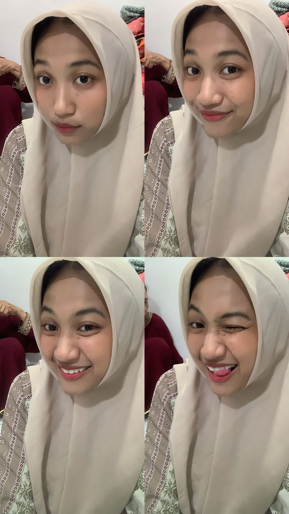
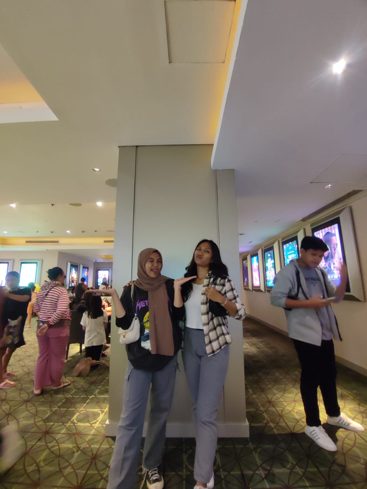

Hallo, perkenalkan saya khairunisa

Nama
: Khairunisa isya ismaya
Tempat/tanggal lahir
: Wonogiri, 16 november 2005
Umur
: 18 tahun
Berat badan
: 70 kg
Tinggi badan
: 171 cm
Sekolah
: SMAN 27 Jakarta
Kelas
: X-5
No. Absen
: 14
Hobi saya adalah voli
Ini teman dekatku
